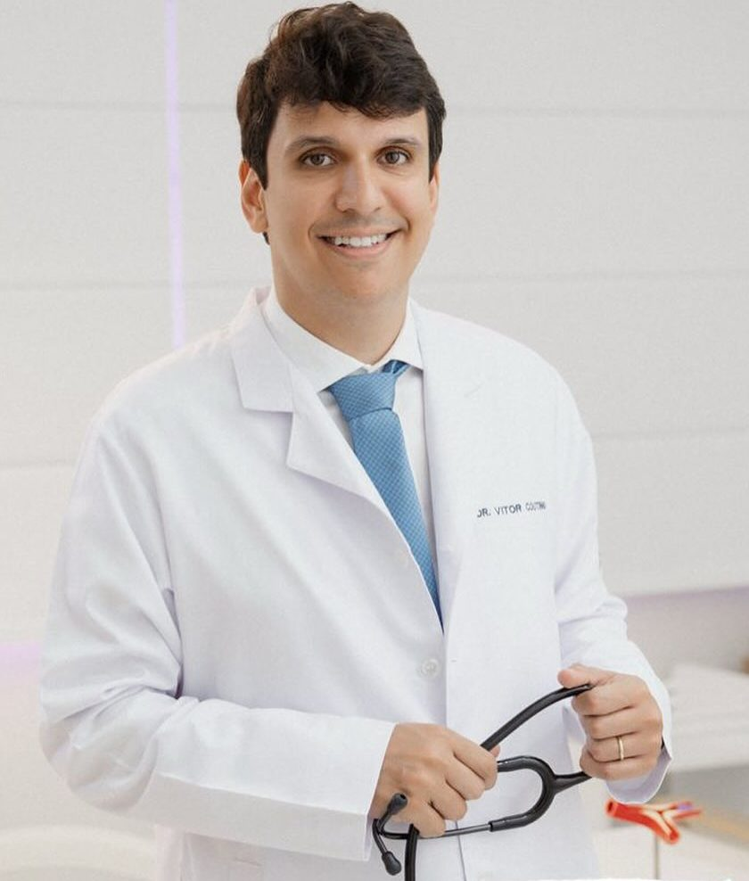

Casos reais de plantão, do primeiro olhar até a conduta.
Uma aula com o Dr. Vitor Coutinho, cardiologista, conduzindo cada caso do começo ao fim: o eletro, a droga, a dose e a ordem. Ao vivo e sem replay.
Quero entrar no grupo da aulaO link da aula sai no grupo do WhatsApp.
O plantão conduzido com um cardiologista do lado.
Casos que chegam em todo plantão
Do tipo que aparece na UPA e no pronto-socorro, conduzidos do começo ao fim, em voz alta.
Vai até a conduta
Não para no diagnóstico. Chega no que fazer com o paciente: a droga, a dose e a ordem.
Você responde antes
No chat, você escreve a sua conduta antes de o Vitor mostrar a dele. É ali que a dúvida aparece, e é ao vivo que ela se resolve.
Uma vez só
A aula acontece ao vivo e não fica gravada para depois.
Para o médico que dá plantão e quer chegar sozinho na conduta, sem precisar de alguém do lado para confirmar.
UPA, pronto-socorro, SAMU ou UTI, formado há pouco ou há muitos anos. E não é só eletro: é o plantão inteiro, da dor no peito à droga que a gente deixa para depois.
O Vitor abre o Clube do Plantonista.
Na live, ele libera a condição de Black Friday do Clube: acesso vitalício a todos os cursos de emergência dele, num lugar só. É a primeira vez que ele faz isso.
- Plantão SeguroO plantão do começo ao fim: a passagem, o raciocínio, o prontuário.
- Arsenal do PlantonistaAs drogas de emergência, como noradrenalina e adrenalina: quando ligar, quanto e como.
- Dor TorácicaSeparar o que mata do que não mata, nos primeiros minutos.
- ArritmiasEstável ou instável, remédio ou choque.
- ECG Descomplicado e ECG GOO curso de eletro e o aplicativo para treinar eletro todo dia no celular.
- PCR, insuficiência cardíaca e exames de portaEntram depois, com data marcada.
Os detalhes da matrícula são apresentados na aula, ao vivo.
Dr. Vitor Coutinho Andrade
Cardiologista, doutor em Cardiologia pela USP. Passou pelo InCor, pelo Hospital Albert Einstein e pela Beneficência Portuguesa, com dez anos de emergência.
Hoje é professor de emergências cardiológicas e ensina a conduzir o caso em uma sequência fixa, a mesma em todo plantão.
“O ECG responde melhor quando a gente faz a pergunta certa.”
Dr. Vitor Coutinho
Quarta, 11 de novembro, às 20h.
Entre no grupo para receber o link da aula e os avisos.
Quero entrar no grupo da aula